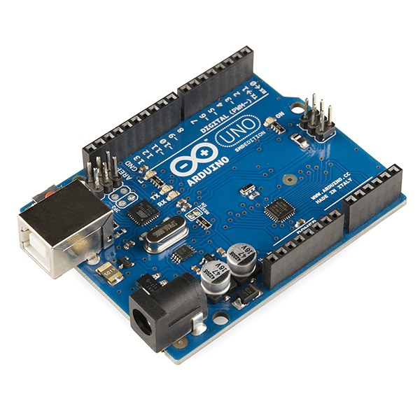

The Autopsy Report · Device #065
The Arduino Uno
The blue board that taught the world to blink an LED. Fifteen years, one 8-bit chip, and the most cloned circuit in history — this is the ATmega328P Uno family, from the 2010 original to the R3 classic. Overview
What is this thing?
The Arduino Uno is a microcontroller development board — not a computer you use, but a computer you build with. At its heart is a single 8-bit chip, the ATmega328P, running at 16 MHz with 32 KB of program memory. You write code on your computer, send it down the USB cable, and the board runs it forever — blinking lights, reading sensors, driving motors. The genius of the Uno was never the chip (it's modest even by 2010 standards). It was the package: a standard layout, stackable "shield" add-ons, a dead-simple programming environment, and fully open hardware — anyone could build one, and millions did. Overview · Uno Rev3 documentation
The family this report covers — the ATmega328P boards — per Arduino's own overview: the original Uno (2010), the Uno R2, the Uno R3 (2011 — the classic, with the ATmega16U2 USB chip), and the Uno SMD R3 (surface-mount version). Later Uno boards moved to different chips — the WiFi Rev2 (ATmega4809) and the R4 line (Renesas) — and sit outside this report's scope; they're named here only so nobody mistakes them for the boards below. Our representative is the Uno R3 — the one in the photo, the one everybody pictures when they hear "Arduino." Arduino's Uno family overview
Not yet on our bench
No Uno has sat on our bench yet. No disassembly (there's barely anything to disassemble), no logic-analyzer captures, no original-unit photography. Everything below comes from Arduino's own documentation, the ATmega328P datasheet, and published technical summaries. When a genuine R3 lands on the bench, we'll verify the chip markings against the datasheet and publish our own photos.
A short history
- 2010The Arduino Uno launches, succeeding the Duemilanove. "Uno" is Italian for "one" — named for the upcoming Arduino 1.0 software release. It becomes the reference design for the whole platform. Wikipedia
- 2011The Uno R3 arrives: the ATmega8U2 USB-serial chip becomes the ATmega16U2, the pin layout gains the 1.0-standard SDA/SCL and IOREF pins, and the reset circuit gets stronger. This is the board that conquers classrooms. Uno SMD R3 datasheet (PDF)
- 2010sThe Uno becomes the most cloned open-hardware board in history. Arduino's response, in part: the EU conformity declaration for the genuine Uno (SKU A000066) — compliance paperwork the clones don't carry. EU declaration of conformity (PDF)
- 2018–2023Later Uno boards move to different microcontrollers — the WiFi Rev2 (ATmega4809, with wireless) and the R4 line (Renesas, 32-bit). Same footprint, new brains — and outside the ATmega328P scope of this report. Arduino's Uno family overview
The outside
A Uno R3 is a 68.6 × 53.4 mm blue board — the color is basically a trademark at this point. Along the top edge: the USB-B jack (the chunky printer-style one), the 2.1 mm DC power jack beside it, and the 6-pin ICSP header. Down both long edges run the female pin headers: power on one side, 14 digital I/O pins (six with PWM) and 6 analog inputs on the other, plus the 2×3 ICSP header near the USB chip for programming the USB-serial microcontroller itself. There's a reset button, a power LED, and the pin-13 LED wired to the classic first sketch. The ATmega328P sits in a socket on the DIP version — you can pry the actual brain out with a screwdriver, which is a wonderful thing for a teaching board. Uno Rev3 documentation

The board
Two chips do nearly everything. The ATmega328P is the microcontroller — 8-bit AVR core, 16 MHz, 32 KB of flash (half a KB taken by the bootloader), 2 KB of SRAM, 1 KB of EEPROM. The ATmega16U2 is the USB-to-serial bridge: it speaks USB to your computer and serial to the 328P, so sketches upload over a plain USB cable. (Earlier boards used an FTDI chip, then the 8U2; the 16U2 arrived with the R3.) A 16 MHz crystal (or ceramic resonator) sets the pace. Power: USB's 5 V, or 7–12 V into the DC jack (6–20 V absolute limits), auto-selected, stepped down by an onboard regulator. ATmega328P datasheet (PDF) · Uno Rev3 documentation
Under the microscope: the chips
Confirmed means a primary source — Microchip's datasheet or Arduino's own documentation — says so. This is one of the best-documented boards in our whole series.
| Chip | What it does | How we know | Dig deeper |
|---|---|---|---|
| ATmega328P 8-bit AVR · 16 MHz · DIP-28 on the classic R3 |
The microcontroller — runs your sketch. 32 KB flash (0.5 KB bootloader), 2 KB SRAM, 1 KB EEPROM. | Confirmed Microchip's datasheet; Arduino's R3 documentation. | Datasheet (PDF) |
| ATmega16U2 USB-to-serial bridge (R3) |
Translates between the USB cable and the 328P's serial port. Reprogrammable via its own ICSP header — Arduino documents the process. | Confirmed Arduino's R3 documentation (R3 moved from the 8U2 to the 16U2). | R3 datasheet (PDF) |
| Voltage regulator 5 V rail from 7–12 V in |
Steps the DC jack's input down to the 5 V the board runs on. Above 12 V it overheats — the docs say so plainly. | Confirmed Arduino's R3 documentation. | Uno Rev3 documentation |
| 16 MHz crystal/resonator | The board's heartbeat — every instruction is timed off it. | Confirmed Arduino's R3 documentation. | Uno Rev3 documentation |
The government's file
Short section, honest answer: the classic Uno R3 has no radio — the documented design includes no transmitter — and no FCC transmitter filing was verified for it. (A device without a transmitter is authorized differently than a radio; the EU declaration of conformity for the genuine Uno, SKU A000066, is a European document, not an FCC filing, and we don't present it as one.) The wireless-equipped later boards (Uno WiFi Rev2, Uno R4 WiFi) carry their own module certifications — and sit outside this report's scope. EU declaration (PDF) · Uno Rev3 documentation
Listening, not knocking
Our posture: we listen, we don't knock. On the Uno this is almost literal — the board's whole design philosophy is openness. The manufacturer's interfaces: the USB serial monitor (read what the board prints), the reset button (restarts your sketch — safe, documented, yours), and the 6-pin ICSP header, which is the official path for programming the chip directly over SPI. That's a manufacturer programming interface, not a backdoor, and documenting its existence and location is the whole of this section. When a Uno reaches our bench: logic-analyzer capture of the serial lines during upload, chip-marking verification against the datasheet, and our own photos. Listening only — which, on a board this well documented, is most of the job.
What we didn't do
- No bench work yet: no captures, no chip readings, no original-unit photos.
- We did not reprogram any 16U2 or reburn any bootloader — those are owner operations on owner hardware, documented here only as existing.
- We claim no FCC ID for the Uno R3 — the documented design has no radio, and no transmitter filing was verified.
- Nothing here touches credentials, keys, or locked functionality. The Uno has none.
By the numbers
- Family: Arduino Uno, ATmega328P boards — original (2010), R2, R3 (2011), SMD R3 Arduino's Uno family overview
- Representative: Uno R3 — ATmega328P @ 16 MHz, ATmega16U2 USB-serial, 32 KB flash / 2 KB SRAM / 1 KB EEPROM ATmega328P datasheet (PDF)
- I/O: 14 digital (6 PWM), 6 analog inputs, USB-B, ICSP, reset button Uno Rev3 documentation
- Power: USB 5 V or 7–12 V DC jack (6–20 V limits) Uno Rev3 documentation
- Size: 68.6 × 53.4 mm Uno Rev3 documentation
- Radio: none on the classic Uno — no transmitter filing verified EU declaration (PDF)
What awaits the bench
- A genuine Uno R3 — chip markings verified against the datasheet, our own photos.
- A logic-analyzer capture of a sketch upload over the USB-serial link — the board narrating its own programming.
- DIP vs SMD R3 board comparison: same circuit, different assembly.
- The R2 and the original: the family members before the R3, documented side by side.
Words to know
Every term this page uses, in plain English. No prior knowledge required.
- Microcontroller
- A tiny computer on one chip — processor, memory, and I/O — meant to be built into things, not used as a computer.
- Sketch
- Arduino's word for a program you upload to the board.
- Bootloader
- A small program already on the chip that lets you upload new sketches over USB. Takes 0.5 KB of the 32 KB flash.
- Shield
- An add-on board that stacks onto the Uno's pin headers — motor drivers, displays, sensors, and a thousand other things.
- ICSP
- In-circuit serial programming — the 6-pin header for programming the chip directly. The manufacturer's own path, not a hack.
- PWM
- Pulse-width modulation — flickering a digital pin fast to fake an analog output, for dimming LEDs or driving motors.
- USB-to-serial bridge
- The 16U2 chip: USB on one side, the microcontroller's serial port on the other. That's how sketches get uploaded.
- Open hardware
- Hardware whose design is published openly, so anyone may study, build on, and modify it.
Sources & confidence
- Uno family members and history: Arduino's own help-center overview and the Uno overview. High confidence.
- R3 specs, pin counts, power limits, dimensions: Arduino's R3 documentation and technical summaries. High confidence.
- ATmega328P architecture and memory: Microchip's datasheet. High confidence.
- EU conformity (SKU A000066): Arduino's declaration. High confidence — and it is not an FCC filing.
- No FCC transmitter ID for the classic Uno: follows from the documented absence of a radio. Stated plainly, not as a gap.
- Anything not listed here is unknown until the bench says otherwise. We'll say so, out loud, when that's the case.
The device photo is a freely licensed stock photo, credited in its caption — not a photo of our own unit, because we don't have one yet.
Legal note. BareBoard is an educational project. Everything on this page is our own writing based on public documents — our summaries, our analysis. We don't publish, host, or distribute firmware, keys, passwords, or credentials. Product names and trademarks belong to their respective owners and appear here only to identify the hardware. If you believe anything here infringes your rights, contact us and we'll address it promptly.